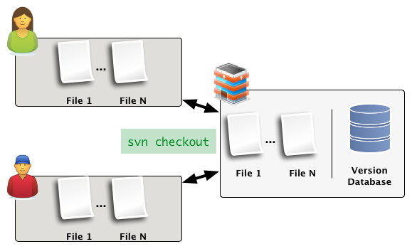
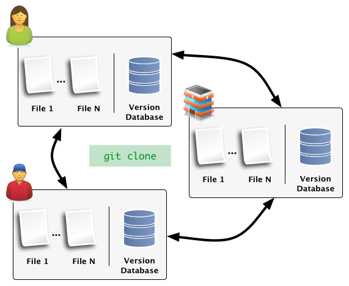
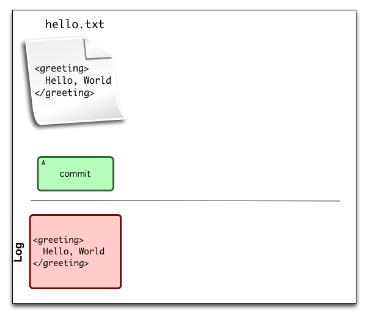
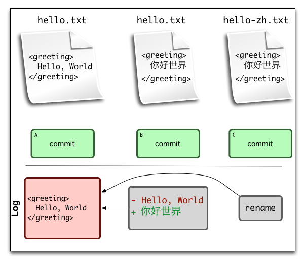

Version Control
Ted Benson
@edwardbenson / eob@csail.mit.edu
@edwardbenson / eob@csail.mit.edu
Goal
Become a master of git-fu
- Understand the model
- Practice workflow tasks
version control system
=
industrial strength dropbox |
your code project
- Keep track of changes
label, revert
- Fork and Sandbox
- Merge, Compare Versions
- Coordinate
- Impose Workflow Checks
How would you design this?
Centralized, Delta-based VCS
SVN, CVS, Perforce, ClearCase
Intro to Git
Git is an open source, distributed, version control system designed for speed and efficiency.
Distributed v. Centralized
| Distributed | Centralized |
|---|---|
|
|
Centralized Version Control
Distributed Version Control
How do you Track Versions?
File Deltas: Database stores a sequence of diffs for each file.
Snapshots: Database stores snapshots of the whole repository.
File Delta Version Tracking

File Delta Version Tracking
File Delta Version Tracking

File Delta Version Tracking
Snapshot Version Tracking

Snapshot Version Tracking